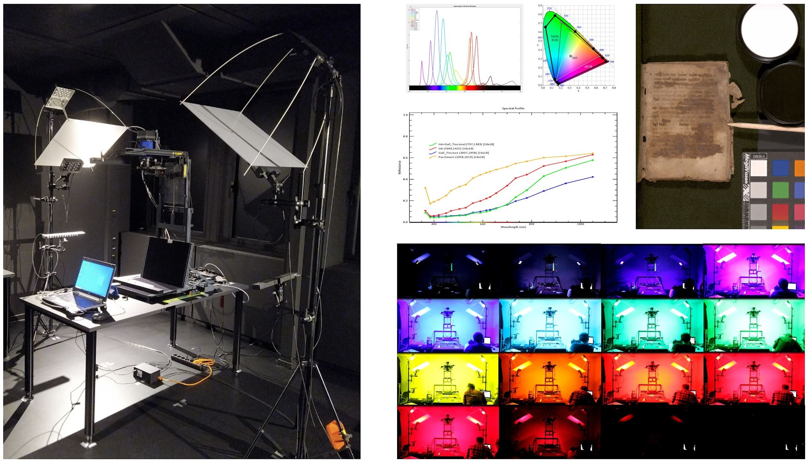
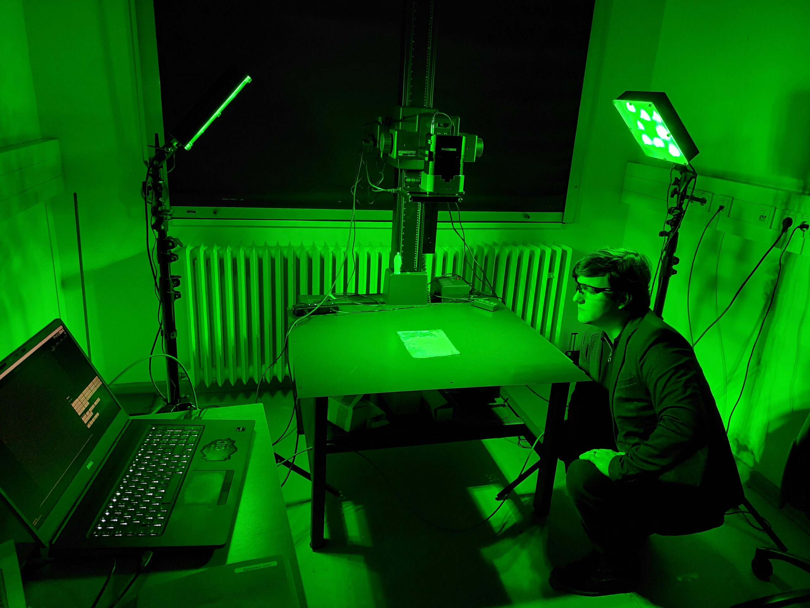
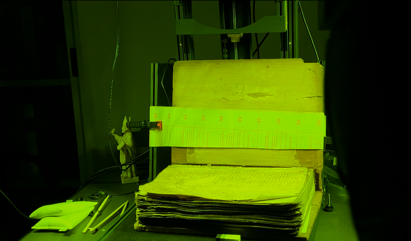
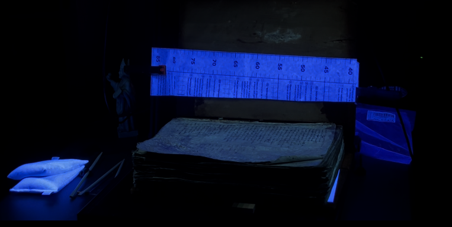
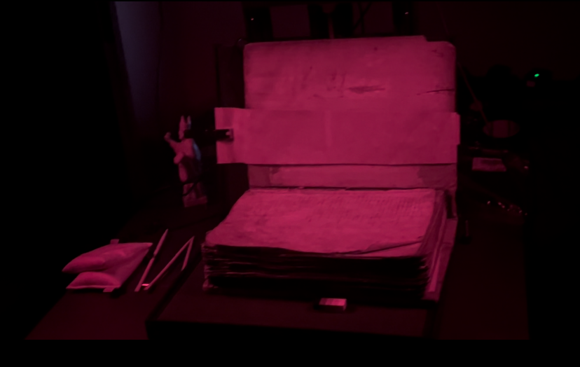

Lesson 6: Future of MSI Applications and Potential Advancements
Various challenges can be overcome with the integration of state-of-the-art novel technologies. Many libraries traditionally prioritize conservation and minimal handling, often limiting analysis to what is visible under standard lighting conditions. While these approaches remain essential, multispectral imaging offers a significant expansion of what can be observed without physical intervention.
As MSI becomes more widely adopted, its role within academic and heritage contexts continues to evolve. A growing number of universities, including University of Göttingen, University of Hamburg, and University of Rochester, have integrated MSI into research and teaching infrastructures. This broader institutional uptake has contributed to a steady increase in MSI-related research, ranging from manuscript studies to material analysis and digital humanities applications.

CSMC (Centre for the Study of Manuscript Cultures) MegaVision MSI system. Universität Hamburg.
At the same time, other libraries, archives, and heritage institutions are increasingly recognizing MSI as a viable non-invasive method rather than an experimental or high-risk technique. As methodological standards mature and successful case studies accumulate, resistance rooted in concerns about object safety has gradually diminished. This shift opens new opportunities for collaboration between libraries, researchers, and imaging specialists, and suggests that MSI is moving toward a more established position within the long-term toolkit of cultural heritage analysis.
Alongside this broader institutional acceptance, there is also a growing effort to lower the technical threshold for engaging with MSI data. More beginner-oriented applications are emerging. A notable example is Proteus, developed as part of the eManuSkript project at the University of Göttingen.
The software was explicitly designed to make multispectral data more accessible to users without extensive training in image science or spectral analysis. Compared to more advanced platforms, Proteus emphasizes streamlined workflows and a reduced number of processing steps, allowing users to focus on exploration and interpretation rather than parameter tuning.
By abstracting some of the underlying technical complexity, it enables palaeographers, librarians, and students to work directly with MSI outputs while remaining within a controlled and methodologically sound framework. Although such tools do not replace advanced software for complex analyses, they can play an important role in broadening participation and supporting early-stage engagement with MSI.
Alex Zawacki at the ARCANALab, SUB Göttingen. PhaseOne MSI system. Photographed by Mona Kirsch.

When it comes to the technical side, indeed, MSI is poised for significant growth driven by the implementation of laser scanning, making it evolve from a passive system that records or reflects emitted radiation to eliminate external illumination sources. Hence, less hardware is required. Moreover, the continuous development of tools dedicated to managing complex data has reduced the time and cost of MSI through advances in cameras, lighting, or filters. Moreover, combining MSI with other digitization techniques, such as 3D modelling or photogrammetry to simultaneously study two artefacts can be achieved through the integration of geometrical and spatial data collected in order to compose a 3D model aligned in a single coordinate system. This can also help capture the texture of artefacts, especially with the use of specific polarizing camera filters.
A standardized MSI workflow throughout the imaging and processing phases can be developed in order to document artefacts more efficiently and precisely. This can be done with artificial intelligence (AI) or with deep learning (DL). When it comes to the former, attempts have been recorded in the field of medicine where MSI is employed in minimally invasive surgeries to visualize some functional properties of tissues, such as the status of a blood perfusion in an organ.
Similarly, in cultural heritage, the process of acquiring the image data was lengthy, resulting in merely having information that cannot be used during the procedure. Thus, a camera that captures 25 frames per second was developed, generating a video image. Alongside a trained AI model, distinguishing perfused vs non-perfused tissue would be possible. This method can be applied to cultural heritage and specifically to digital palaeography where a model can be trained to detect the potential of retrieving undertext in palimpsests. When it comes to the latter, combining MSI with DL can be achieved through the semantic segmentation of images captured with MSI. This technique was used in the forestry field to detect deforestation through the measurement of vegetation from aerial photographs with a high resolution.
MSI images were employed to increase the classification accuracy by providing information about every pixel. The same approach can be applied to cultural heritage. For instance, classes that can be taken into account can involve “text” vs “non-text” to differentiate parchment from ink, or “damaged” vs “undamaged” regions to have an automatic detection of stains or abrasions.
This approach would facilitate the workflow by automating the pixel-wise classification of artifacts, although it requires expert training input and a thorough validation phase. Some common tools such as MATLAB Toolbox which is an imaging library to facilitate the image processing phase through tools that can examine MSI images and analyze them to detect spectral structures.



Ultimately, the long-term success of MSI in cultural heritage will rest on its ability to balance technical sophistication with usability and innovation. As tools, training, and collaborative frameworks continue to mature, MSI has the potential to become a stable and integral component of cultural heritage, specifically in manuscript studies and material analysis, supporting new forms of inquiry while remaining firmly grounded in established scholarly practice.